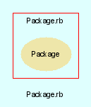

|  |
AbtDepEngine.rb
AbtDepEngine class handles all dependency aspects of the AbTLinux system. It is part of a sub-project with it’s own requirements document.
Created by Eric D. Schabell <erics@abtlinux.org> Copyright 2006, GPL.
This file is part of AbTLinux.
AbTLinux is free software; you can redistribute it and/or modify it under the terms of the GNU General Public License as published by the Free Software Foundation; either version 2 of the License, or (at your option) any later version.
AbTLinux is distributed in the hope that it will be useful, but WITHOUT ANY WARRANTY; without even the implied warranty of MERCHANTABILITY or FITNESS FOR A PARTICULAR PURPOSE. See the GNU General Public License for more details.
You should have received a copy of the GNU General Public License along with AbTLinux; if not, write to the Free Software Foundation, Inc., 51 Franklin St, Fifth Floor, Boston, MA 02110-1301 USA
Constructor for the AbtDepEngine class.
RETURN AbtDepEngine - an initialized AbtDepEngine object.
[ show source ]
# File AbtDepEngine.rb, line 41
41: def initialize
42: end